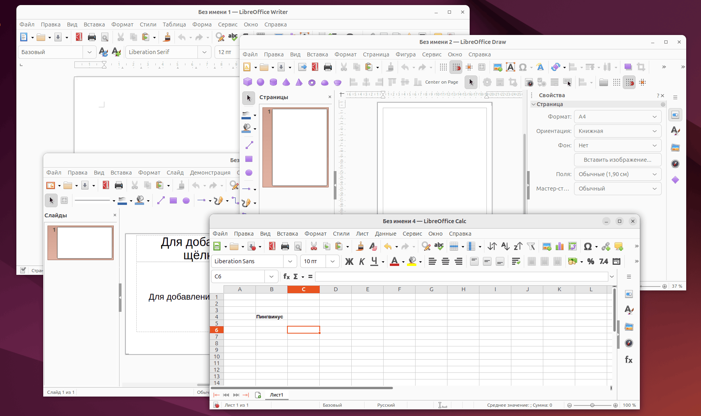

Программы для обработки информации
Для разных задач существуют разные приложения.
Компьютер помогает человеку не только искать и хранить информацию, но и создавать новые документы, изменять данные, выполнять расчёты и представлять результаты работы.
Для этого используются прикладные программы — приложения, предназначенные для решения конкретных задач пользователя.
Работа с текстом
Написание докладов, оформление рефератов, составление заявлений, создание писем и других документов.
Работа с данными
Составление таблиц, хранение чисел, выполнение вычислений, анализ результатов и построение диаграмм.
💡 Главная идея: программу следует выбирать в зависимости от задачи. Для написания сочинения удобен текстовый процессор, а для расчёта расходов — электронная таблица.
Текстовые редакторы и процессоры
Создание, изменение и оформление документов.
Текстовый редактор — программа для создания и редактирования текстовой информации.
Простейшие текстовые редакторы позволяют вводить текст, исправлять ошибки, удалять или перемещать его фрагменты.
Более широкими возможностями обладают текстовые процессоры. Они позволяют не только изменять текст, но и оформлять документы, вставлять изображения, таблицы и другие объекты.
Примеры программ
Microsoft Word
Популярный текстовый процессор для создания и оформления документов.
LibreOffice Writer
Свободный текстовый процессор с широкими возможностями редактирования.
Блокнот
Простой редактор, предназначенный преимущественно для работы с обычным текстом.
Что можно делать в текстовом процессоре?
Вводить текст
Создавать документы и записывать информацию.
Редактировать
Исправлять, удалять, копировать и перемещать текст.
Форматировать
Изменять шрифт, размер, цвет и оформление абзацев.
Добавлять объекты
Вставлять рисунки, таблицы и другие элементы.
Проверять документ
Находить ошибки и исправлять неточности.
Сохранять
Записывать результат в файл для дальнейшей работы.
Как устроен текстовый процессор?
Основные элементы рабочего окна программы.
В разных текстовых процессорах оформление интерфейса может отличаться, однако основные элементы выполняют похожие функции.
Мой первый документ
Текстовые процессоры используются для подготовки различных документов.
В них можно выделять важные слова , изменять размер и цвет шрифта.
Упрощённая схема интерфейса текстового процессора. Реальное расположение элементов зависит от программы и версии.
Редактирование и форматирование текста
Два разных способа работы с документом.
Создавая документ, пользователь не только вводит текст, но и изменяет его содержание и внешний вид.
✏️ Редактирование
Изменение содержания текста: исправление ошибок, вставка, удаление, копирование и перемещение фрагментов.
До: Компютер помогает учиться.
После: Компьютер помогает учиться.
🎨 Форматирование
Изменение внешнего вида текста без изменения его содержания.
Обычный текст
Оформленный текст
💡 Запомни: редактирование изменяет содержание документа, а форматирование — его оформление.
Электронные таблицы
Программы для хранения и обработки данных.
Иногда информацию удобнее представить не в виде обычного текста, а в виде таблицы с чёткими строками и столбцами.
Электронная таблица — таблица, предназначенная для хранения и обработки данных с помощью компьютера. Программы для работы с такими таблицами называются табличными процессорами.
Примеры табличных процессоров
Microsoft Excel
Программа для работы с электронными таблицами, вычислений, анализа данных и создания диаграмм.
LibreOffice Calc
Свободный табличный процессор для хранения данных, выполнения расчётов и представления результатов.
Основные возможности
Хранение данных
Размещение текста и чисел в ячейках.
Вычисления
Автоматические расчёты по заданным формулам.
Диаграммы
Наглядное представление числовых данных.
Организация
Удобное представление больших наборов сведений.
Анализ
Сравнение показателей и выявление закономерностей.
Пересчёт
Обновление результатов при изменении исходных данных.
Устройство электронной таблицы
Строки, столбцы, ячейки и их адреса.
В электронной таблице данные располагаются в ячейках, образующих строки и столбцы.
Столбцы обычно обозначаются латинскими буквами: A, B, C и далее. Строки обозначаются числами: 1, 2, 3 и так далее.
| A | B | C | D | |
|---|---|---|---|---|
| 1 | День | Температура | Осадки | Ветер |
| 2 | Понедельник | 16 | Нет | Слабый |
| 3 | Вторник | 17 | Дождь | Умеренный |
| 4 | Среда | 18 | Нет | Слабый |
| 5 | Четверг | 19 | Нет | Слабый |
Упрощённая схема электронной таблицы с примером числовых и текстовых данных.
Строка
Горизонтальная последовательность ячеек. Номер строки обозначается числом.
Столбец
Вертикальная последовательность ячеек. Столбцы обозначаются буквами.
Ячейка
Область на пересечении строки и столбца, в которой размещаются данные.
Лист
Отдельная электронная таблица. Один файл может содержать несколько листов.
Как определяется адрес ячейки?
Адрес ячейки состоит из обозначения столбца и номера строки.
Например, B4 — это ячейка, расположенная на пересечении столбца B и строки 4.
Такая система позволяет точно указывать, где находятся необходимые данные.
Какие данные хранятся в ячейках?
Текст, числа и формулы.
Содержимое ячейки электронной таблицы может относиться к разным типам данных.
Текст
Названия товаров, имена людей, дни недели и другие надписи.
Числа
Оценки, цены, результаты измерений и другие числовые значения.
Формулы
Записи, по которым программа автоматически выполняет вычисления.
💡 Особенность электронных таблиц: они способны автоматически пересчитывать результаты при изменении исходных чисел. Подробно работать с формулами мы будем на следующих уроках.
Текстовый процессор или электронная таблица?
Выбор программы зависит от задачи.
В текстовом процессоре тоже можно создать таблицу, а в электронной таблице — записать текст. Однако у этих программ разное основное назначение.
| Признак | Текстовый процессор | Электронная таблица |
|---|---|---|
| Основная задача | Создание и оформление документов | Организация и обработка данных |
| Рабочая область | Страницы документа | Ячейки, строки и столбцы |
| Основная информация | Текст и элементы документа | Числа, текст и формулы |
| Вычисления | Ограниченные возможности | Автоматические расчёты по формулам |
| Примеры программ | Word, Writer | Excel, Calc |
Примеры из школьной жизни
Как выглядят реальные офисные программы?
Примеры интерфейсов LibreOffice.
На изображении представлены несколько приложений офисного пакета LibreOffice. Среди них можно увидеть текстовый процессор Writer и табличный процессор Calc.


Обрати внимание: Writer предоставляет рабочую область для создания документа, а Calc — сетку ячеек, образованную строками и столбцами.
💡 Несмотря на различия в интерфейсе, большинство текстовых и табличных процессоров построены на похожих принципах. Поэтому знания, полученные при работе с одной программой, часто помогают освоить другую.
Вопросы для повторения
12 вопросов по материалу первой части темы.
- Для чего предназначены текстовые редакторы?
- Чем текстовый процессор отличается от простого текстового редактора?
- Какие программы можно использовать для создания текстовых документов?
- Что такое редактирование текста?
- Чем форматирование отличается от редактирования?
- Какие основные элементы имеет интерфейс текстового процессора?
- Для чего предназначены электронные таблицы?
- Какие программы называют табличными процессорами?
- Что называют строкой, столбцом и ячейкой электронной таблицы?
- Как определяется адрес ячейки? Что означает адрес B4?
- Какие данные можно хранить в ячейках электронной таблицы?
- В чём главное отличие электронной таблицы от таблицы в текстовом документе?
✨ Итог урока
Текстовые процессоры предназначены для создания, редактирования и оформления документов. Табличные процессоры помогают организовывать, хранить и обрабатывать данные, выполнять расчёты и представлять результаты. Основным элементом электронной таблицы является ячейка, имеющая собственный адрес. Выбор программы зависит от задачи, которую необходимо решить.